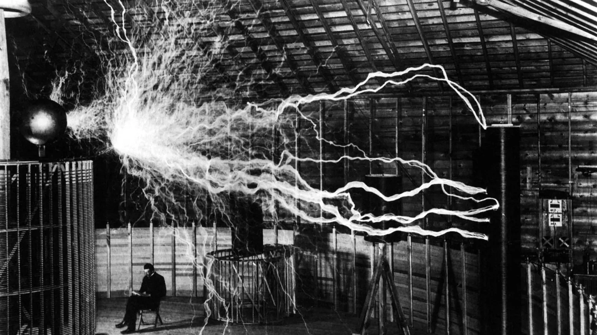
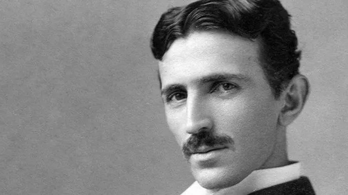
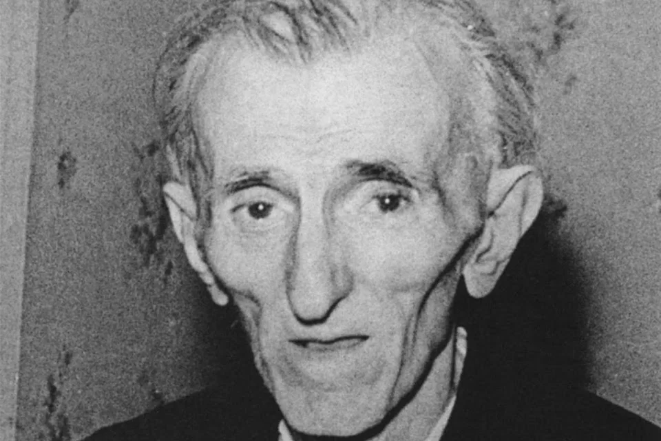

O inicio de tudo
Nikola Tesla nasceu na aldeia de Smiljan, durante o Império Austro-húngaro, na atual Croácia, no dia 10 de julho de 1856. Filho de um sacerdote ortodoxo, desde pequeno, foi treinado por seu pai para desenvolver a memória e o raciocínio. Sua mãe era descendente de família de inventores. Durante sua infância dizia que via flashes de luz que apareciam diante de seus olhos.
Em 1882, Tesla descobriu o campo magnético rotativo, um princípio fundamental da física e da base de todos os dispositivos que usam correntes alternadas. Nesse mesmo ano, trabalhou na Companhia Continental Edison, em Paris. Dois anos depois, foi convidado para trabalhar na firma de Thomas Edison (1847-1931) em Nova Iorque, para onde se mudou.
As divergências de opinião entre Tesla e Thomas Edison, sobre corrente contínua, foi o motivo do desentendimento entre eles. Tesla havia criado ferramentas para tornar viável o uso da corrente alternada, uma forma eficiente de transmitir energia a grandes distâncias, mas perigoso em caso de acidente. Edison, que baseava suas tecnologias na corrente contínua, era contra a “corrente assassina de Tesla”. A corrente alternada de Tesla é a que hoje corre nos fios de alta tensão do planeta.
Invenções e Patentes
As pesquisas e descobertas de Tesla têm grande importância para a eletrotécnica e a radioeletricidade. Ao todo, Nikola Tesla registrou cerca de 40 patentes nos Estados Unidos e mais de 700 no mundo todo. Suas invenções foram focadas na utilização da eletricidade e magnetismo, entre eles: a lâmpada fluorescente, o motor de indução (utilizado em indústrias e em vários eletrodomésticos), o controle remoto, a Bobina Tesla, transmissão via rádio, o sistema de ignição utilizado nas partidas dos carros, a corrente alternada etc.
Prêmios
Em 1894, Nikola Tesla recebeu o título Honoris Causa pela Universidade de Columbia, e a medalha Elliot Cresson, pelo Instituto Franklin. Em 1912, Tesla recusou-se a dividir o Prêmio Nobel de Física com Edison, o que acabou sendo dado a outro pesquisador. Em 1934, a cidade da Filadélfia concedeu-lhe a medalha John Scott pelo seu sistema de energia polifásico . Nikola era membro honorário da Associação Nacional de Luz Elétrica e membro da Associação Americana para o Avanço da Ciência.
Morte
Em uma noite de outono de 1937, aos 81 anos, depois da meia-noite, Tesla deixou o Hotel New Yorker para ir regularmente à catedral e à biblioteca para alimentar os pombos. Ao atravessar uma rua a alguns quarteirões do hotel, Tesla não conseguiu desviar de um táxi em movimento e foi jogado no chão. Suas costas estavam gravemente feridas e três costelas foram quebradas no acidente. A extensão total de seus ferimentos nunca foi conhecida; Tesla se recusou a consultar um médico, um costume que desenvolveu ao longo da vida, e nunca se recuperou totalmente
Em 7 de janeiro de 1943, aos 86 anos de idade, Tesla morreu sozinho no quarto 3327 do New Yorker Hotel. Seu corpo foi encontrado mais tarde pela empregada Alice Monaghan depois que ela entrou no quarto de Tesla, ignorando o sinal de "não perturbe" que ele havia colocado em sua porta dois dias antes. O examinador médico assistente H. W. Wembley examinou o corpo e decidiu que a causa da morte havia sido trombose coronariana.